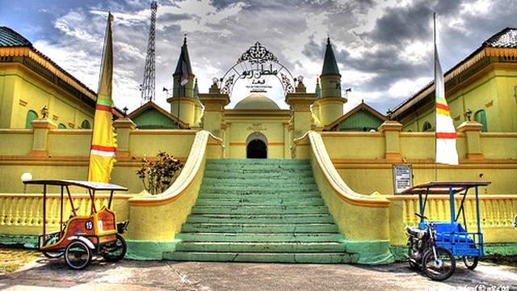
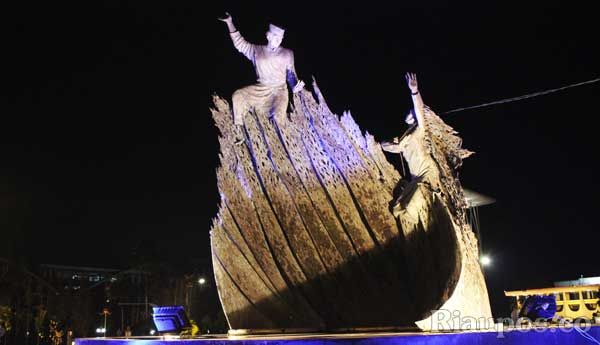
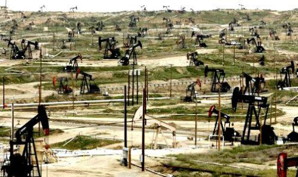
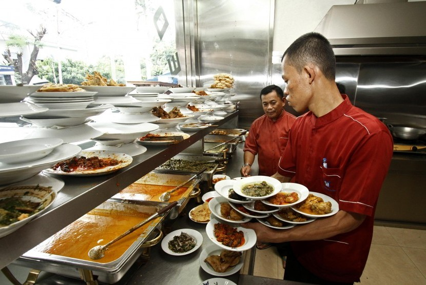
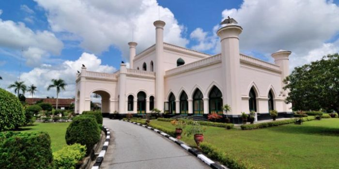
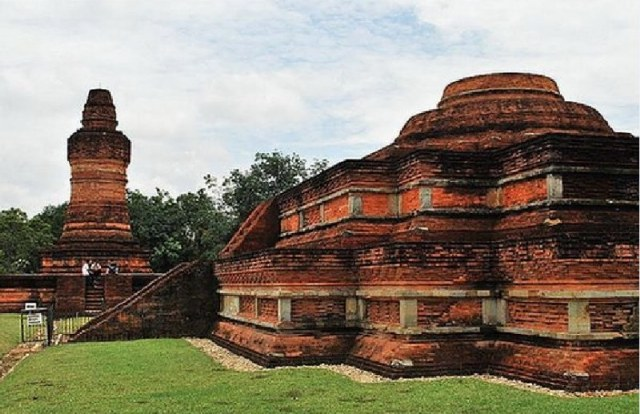
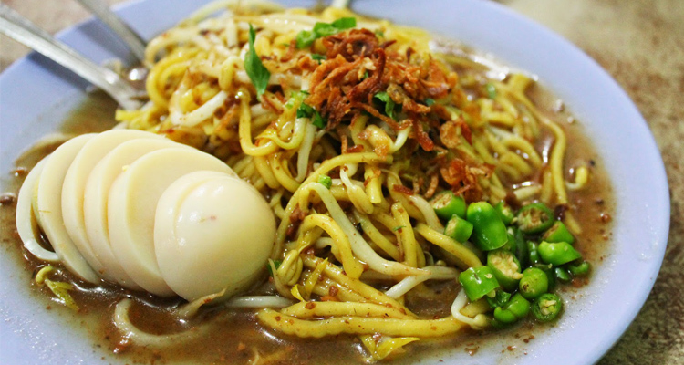

Provinsi Riau berada di pulau Sumatera berbatasan dengan provinsi Sumatera Barat, Provinsi Sumatera Utara, Kepulauan Riau, dan Provinsi Jambi. Kini, Provinsi Riau telah berumur 57 tahun dengan jumlah penduduk sekitar 5,5 juta orang. Mungkin saat ini Provinsi Riau mendapat citra negatif akibat pembakaran hutan, korupsi, dan beberapa kasus kriminal lainnya yang heboh diberitakan media. Tapi, di balik semua itu provinsi Riau adalah provinsi yang memiliki keunikan tersendiri dan perlu diketahui masyarakat. Apa saja keunikan provinsi yang dijuluki Bumi Melayu ini?
Provinsi Riau berada di pulau Sumatera berbatasan dengan provinsi Sumatera Barat, Provinsi Sumatera Utara, Kepulauan Riau, dan Provinsi Jambi. Kini, Provinsi Riau telah berumur 57 tahun dengan jumlah penduduk sekitar 5,5 juta orang. Mungkin saat ini Provinsi Riau mendapat citra negatif akibat pembakaran hutan, korupsi, dan beberapa kasus kriminal lainnya yang heboh diberitakan media. Tapi, di balik semua itu provinsi Riau adalah provinsi yang memiliki keunikan tersendiri dan perlu diketahui masyarakat. Apa saja keunikan provinsi yang dijuluki Bumi Melayu ini?

Riau merupakan salah satu provinsi terkaya di Indonesia dengan sumber daya alamnya minyak bumi, gas alam, dan kelapa sawit. Pendapatan daerah provinsi Riau pada tahun 2012 mencapai sekitar Rp 91 triliyun. Dengan sumber daya alam yang melimpah, wajar saja Riau menjadi provinsi terkaya di Indonesia.

Provinsi Riau terkenal sebagai daerah penghasil minyak bumi terbesar di Indonesia 365.827 barrel per hari. Ladang minyak bumi di Riau mayoritas dikelola oleh PT Chevron. Selain minyak yang dihasilkan dari “bawah” tanah, Riau juga memiliki sumber minyak yang berasal dari “atas” tanah. Ya, Riau juga terkenal sebagai penghasil minyak kelapa sawit. Luas keseluruhan lahan perkebunan kelapa sawit yang ada di Riau sekitar 2,3 juta hektar dan menghasilkan CPO sebanyak 8.198.962 ton per tahun.

Secara geografis, Riau berdekatan dengan provinsi Sumatera barat, tidak heran jika rumah makan Padang berjamuran. Hampir di setiap sudut jalan perkotaan anda bisa menemukan rumah makan Padang. Cita rasanya tidak kalah seperti di daerah asalnya, karena banyak orang asli Sumatera Barat merantau dan membuka rumah makan Padang di Riau.

Jauh sebelum kemerdekaan, Riau berada di bawah Kesultanan Siak Sri Indrapura. Kesultanan Siak memiliki komplek istana yang menjadi kediaman Sultan Siak yang dibangun pada tahun 1889. Istana yang dijuluki Istana Matahari Timur ini berada di kabupaten Siak. Arsitekturnya merupakan perpaduan dari corak Arab, Melayu, dan Eropa.

Candi Muara Takus merupakan situs candi peninggalan kerajaan Sriwijaya. Candi ini berlokasi di Kabupaten Kampar, sekitar 135 kilometer dari kota Pekanbaru. Candi ini bercorak Buddha dan terdiri 4 Candi besar. Candi Muara Takus selalu dipadati pengunjung pada hari – hari besar agama Buddha.

Mie Lendir merupakan makanan khas Riau khususnya di kepulauan Riau. Namanya memang “aneh” dan menggelikan, tetapi rasanya luar biasa. Mie lendir terbuat dari mie kuning beserta toge, yang disiram dengan kuah kacang dicampur ubi. Untuk Roti Canai kamu pasti sudah tidak asing lagi. Tapi roti canai khas melayu berbeda dengan roti canai India. Roti ini biasa disantap dengan kari daging kambing. Nikmat bukan? Hal – hal di atas hanyalah sebagian kecil dari banyaknya keunikan yang dimiliki Riau. Masih banyak hal – hal keren dan unik dari Bumi Melayu ini. Kamu penasaran? Jangan sungkan – sungkan untuk berkunjung ke Riau, Go visit Riau!